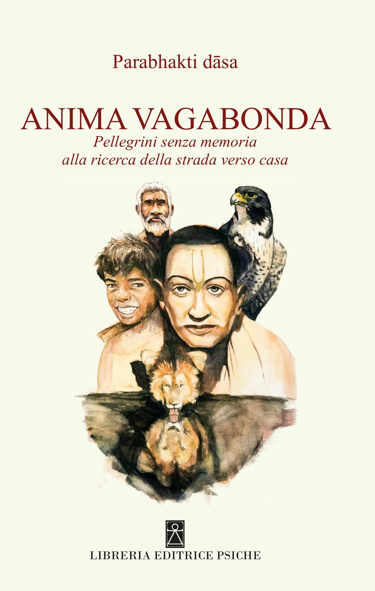

Nasce da un'esperienza personale, da un cammino di ricerca che ha condotto l'autore a confrontarsi con le domande più profonde sull'esistenza e sul senso del nostro passaggio nel mondo.
Dopo aver raccontato la propria esperienza, accompagna chi legge in un viaggio attraverso saperi antichi e insegnamenti della cultura dei Veda: il karma, la trasmigrazione dell'anima, le energie che governano l'universo.
- editoreLibreria Editrice Psiche
- formato15 × 21 cm
- ISBN979-12-80968-30-2
Il valore del libro sta anche nel modo in cui questi temi vengono presentati. Ogni capitolo prende avvio da antiche storie e fiabe della tradizione purānica: racconti che sembrano semplici e affascinanti, ma custodiscono significati profondi.
La storia diventa così una porta d'ingresso alla riflessione. Dietro personaggi, vicende e simboli emergono interrogativi che riguardano ciascuno di noi, invitandoci a fermarci, a osservare la nostra vita da una prospettiva diversa.
Dopo il racconto, l'autore entra nel cuore dell'insegnamento, approfondendone il significato spirituale e filosofico. Nasce così un dialogo tra narrazione antica e riflessione contemporanea, tra esperienza personale e conoscenza tradizionale.
- Chi siamo veramente?
- Qual è il significato delle nostre esperienze?
- Che cosa determina le conseguenze delle nostre azioni?
- Qual è il cammino dell'anima?
Un viaggio fatto di racconti, simboli e insegnamenti antichi, per riscoprire una dimensione più profonda della nostra esistenza. Un'anima che vaga, cerca, incontra e, attraverso la conoscenza, prova a comprendere il senso del proprio cammino.
Parabhakti dāsa, al secolo Mauro Bombieri, è autore, insegnante e studioso di filosofia spirituale. Da oltre cinquant'anni percorre il sentiero della ricerca interiore: un cammino alimentato dallo studio e dalla meditazione, ma anche dall'incontro diretto con il mondo, le sue culture e le sue tradizioni.
I suoi viaggi lo hanno condotto in India, in Asia e in molti altri luoghi di antica sapienza, alla ricerca di quella conoscenza universale che accomuna popoli, epoche e visioni del mondo.
La natura della coscienza, il mistero dell'anima e il senso del viaggio umano sono i temi che da sempre animano la sua vita, intrecciandosi con l'esperienza viva dell'incontro con l'altro.
Negli anni ha condiviso il proprio percorso con migliaia di persone attraverso conferenze, incontri culturali e attività educative in diverse parti del mondo, rendendo accessibili insegnamenti millenari e saggezze pratiche con un linguaggio semplice, autentico e universale.
In questo libro accompagna il lettore in una riflessione profonda sul significato dell'esistenza, sul continuo peregrinare che caratterizza la condizione umana e sulla possibilità, sempre presente, di ritrovare una direzione autentica. Un invito a riscoprire quel filo interiore capace di dare senso, orientamento e pienezza al cammino della vita.
 guarda su YouTube
guarda su YouTube
Chi legge il libro trova chi lo insegna, dove si compra, dove si va di persona. Ogni porta si apre sulle altre.
[ in attesa ] — i collegamenti delle cinque porte e quello all'ordine.
I testi sono di Parabhakti dāsa, dal materiale che ha inviato.
Copertina: Libreria Editrice Psiche.